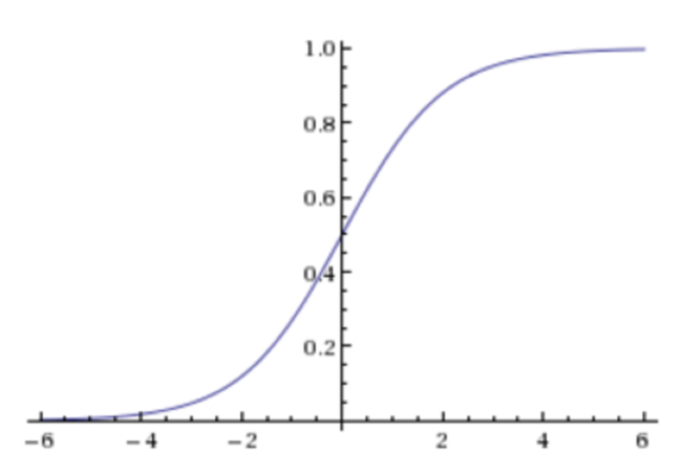

逻辑回归原理¶
- 学习目标
- 掌握LR使用场景
- 掌握LR的基本原理
1. 为什么学习逻辑回归？¶
在前面的KNN算法中直接可以得出预测结果，但是如果想输出预测结果，还要输出预测结果的概率，这时候就需要使用逻辑回归解决问题。
比如，预测性别的时候，预测为男性，同时预测概率为90%，这样可以通过概率更加具有说服力。
应用场景
逻辑回归（Logistic Regression）是机器学习中的一种分类模型，逻辑回归是一种分类算法，虽然名字中带有回归。由于算法的简单和高效，在实际中应用非常广泛。
-
广告点击率
-
是否为垃圾邮件
-
是否患病
-
金融诈骗
-
虚假账号
看到上面的例子，我们可以发现其中的特点，那就是都属于两个类别之间的判断。逻辑回归就是解决二分类问题的利器。
2. 极大似然估计¶
2.1 为什么要有极大似然估计？¶
例子：我与一位猎人一起外出打猎，一只野兔从前方穿过，只听到一声枪响，野兔应声倒下。问是谁倒下的呢？
答：极有可能是猎人。
显然候选人就两个，我和猎人。若选择我，则事件发生的发生概率为0.01%，因为我不会打猎；若选择猎人，则事件发生的概率为99%，而事件已经发生，因此选择猎人更为合适。
极大似然估计的思想
设总体中含有待估参数w，可以取很多值。已经知道了样本观测值（例子中的兔子被猎人打死了），从w的一切可能值中（引例中是我和猎人）选出一个使该观察值出现的概率为最大的值，作为w参数的估计值，这就是极大似然估计。（顾名思义：就是看上去那个是最大可能的意思）
2.2 极大似然估计步骤：¶
求极大似然函数估计值的一般步骤：
（1） 写出似然函数；
（2） 对似然函数取对数，并整理；
（3） 求导数 ；
（4） 解似然方程
极大似然估计，只是一种概率论在统计学的应用，它是参数估计的方法之一。说的是已知某个随机样本满足某种概率分布，但是其中具体的参数不清楚，参数估计就是通过若干次试验，观察其结果，利用结果推出参数的大概值。极大似然估计是建立在这样的思想上：已知某个参数能使这个样本出现的概率最大，我们当然不会再去选择其他小概率的样本，所以干脆就把这个参数作为估计的真实值。
当然极大似然估计只是一种粗略的数学期望，要知道它的误差大小还要做区间估计。
2.3 极大似然估计的例子¶
设某工序生产的产品的不合格率为 ，抽
，抽 个产品作检验，发现有
个产品作检验，发现有 个不合格，试求
个不合格，试求 的极大似然估计．
的极大似然估计．
分析：设 是抽查一个产品时的不合格品个数，则
是抽查一个产品时的不合格品个数，则 服从参数为
服从参数为 的二点分布
的二点分布 ．抽查
．抽查 个产品，则得样本
个产品，则得样本 ，其观察值为
，其观察值为 ，假如样本有
，假如样本有 个不合格，即表示
个不合格，即表示 中有
中有 个取值为１，
个取值为１， 个取值为０．按离散分布场合方法，求
个取值为０．按离散分布场合方法，求 的极大似然估计．
的极大似然估计．
解：（１）写出似然函数：
（２）对 取对数，得对数似然函数
取对数，得对数似然函数 ：
：

（３）由于 对
对 的导数存在，故将
的导数存在，故将 对
对 求导，令其为０，得似然方程：
求导，令其为０，得似然方程：
（４）解似然方程得：
（５）经验证，在 时，
时， ，这表明
，这表明 可使似然函数达到最大
可使似然函数达到最大
（６）上述过程对任一样本观测值都成立，故用样本代替观察值便得 的极大似然估计为：
的极大似然估计为：
将观察值代入，可得 的极大似然估计值为：
的极大似然估计值为： ，其中
，其中 ．
．
若总体 的分布中含有多个未知参数
的分布中含有多个未知参数 时，似然函数
时，似然函数 是这些参数的多元函数
是这些参数的多元函数 ．代替方程（３），我们有方程组
．代替方程（３），我们有方程组 ，由这个方程组解得
，由这个方程组解得 分别是参数
分别是参数 的极大似然估计值．
的极大似然估计值．
3. Sigmod函数模型¶
3.1 逻辑斯特函数的由来¶
Sigmod函数，也称之为逻辑斯特函数
假设一事件发生的概率为P，则不发生的概率为1-P，我们把发生概率/不发生概率称之为发生的概率比，数学公式表示为：

更进一步我们定义logit函数，它是概率比的对数函数（log-odds）
Logit函数耳朵输入值范围介于[0,1]之间，它能将输入转换到整个实数范围内。
对logit函数求反函数，我们将logit的反函数叫做logistic函数：
该函数的图像如下图：
对图像的理解：sidmod函数以实数值作为输入并将其反射到[0，1]区间，拐点在y=0.5地方。
3.2 Sigmod函数绘图¶
- 需求：绘制[-7，7]的sigmod函数图像
import matplotlib.pyplot as plt
import numpy as np
def sigmod(z):
return 1.0/(1.0+np.exp(-z))
z=np.arange(-7,7,0.1)
phi_z=sigmod(z)
plt.plot(z,phi_z)
plt.axvline(0.0,color='k')
plt.axhspan(0.0,1.0,facecolor='1.0',alpha=1.0,ls='dotted')
plt.yticks([0.0,0.5,1.0])
plt.ylim(-0.1,1.1)
plt.xlabel('z')
plt.ylabel('$\phi (z)$')
plt.show()

- 逻辑回归的分类结果是通过属于某个类别的概率值来判断
- 预测概率大于 50% 则分为类1类别(正例), 反之为0类别(反例)
3.3 进一步探究-加入线性回归¶
-
测试数据为

-
要学习的参数为：

模型的线性表示：（样本特征与权重的线性组合）
向量表示：
处理二值数据，引入Sigmoid函数时曲线平滑化
从而实现数据分类任务。
3.4 结果解释¶
输出结果解释(重要)：假设有两个类别A，B，并且假设我们的概率值为属于A(1)这个类别的概率值。现在有一个样本的输入到逻辑回归输出结果0.55，那么这个概率值超过0.5，意味着我们训练或者预测的结果就是A(1)类别。那么反之，如果得出结果为0.3那么，训练或者预测结果就为B(0)类别。
关于**逻辑回归的阈值是可以进行改变的**，比如上面举例中，如果你把阈值设置为0.6，那么输出的结果0.55，就属于B类。
在之前，我们用均方误差来衡量线性回归的损失
在逻辑回归中，当预测结果不对的时候，我们该怎么衡量其损失呢？
我们来看下图(下图中，设置阈值为0.6)，

那么如何去衡量逻辑回归的预测结果与真实结果的差异？
首先我们进行逻辑斯特回归函数的表示学习。
3.5 对数似然损失函数¶
假设：有 0、1 两个类别，某个样本被分为 1 类的概率为: p, 则分为 0 类的概率为 1-p，则每一个样本分类正确的概率为：
上述公式可转换为：
假设，我们现在有样本：[(x1, y1), (x2, y2) … (xn, yn)]，那么，全部预测正确的概率表示为：
通过极大化事件概率，从而估计出模型参数。接下来，将上式其转换为对数加法的形式：
上述公式为最大化问题，通过增加一个负号，将其变为最小化问题，公式再次转换如下： $$ \log (\mathrm{L})=\sum_{i=1}^{m}-y_{i} \cdot \log \left(p_{i}\right)-\left(1-y_{i}\right) \cdot \log \left(1-p_{i}\right) $$
此时，得到**逻辑回归的对数似然损失函数.**
如上述案例，我们就带入上面那个例子来计算一遍，就能理解意义了。

我们已经知道，-log(P), P值越大，结果越小，所以我们可以对着这个损失的式子去分析。
5. 总结¶
- Sigmod函数含义
- 对数似然函数的理解